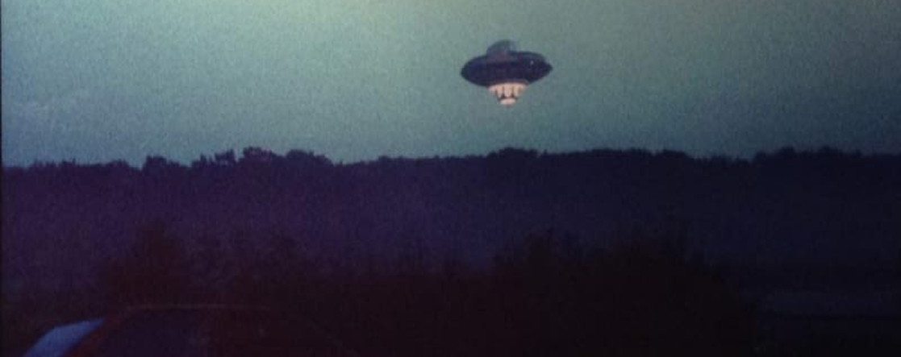

Look Up in the Sky
Whether it’s a satellite, a secret aircraft, or something not-of-this-world, every sighting leaves behind a story. Ready to decode the cosmic whispers?
Whether it’s a satellite, a secret aircraft, or something not-of-this-world, every sighting leaves behind a story. Ready to decode the cosmic whispers?
So...What is UFO?
First sighted in 1947, UFO, stands for Unidentified Flying Object, is any object or phenomenon observed in the sky that cannot be immediately identified. The term gained prominence after World War II with the advent of rocketry, leading some to speculate about extraterrestrial life visiting Earth.
Learn moreWhy the USA?
Through this project, the team hopes to reveal patterns that might otherwise seem random or coincidental. By transforming the dataset into meaningful visualizations, we aim to uncover and communicate the correlations behind UFO sighting trends.
For the UFO enthusiasts...
This website contains interactive visualizations that highlights when and where sightings most frequently occur, helping enthusiasts like you to identify meaningful patterns and make more informed prediction of UFO activity.
Small Description: Through this project, the team hopes to reveal patterns that might otherwise seem random or coincidental.
Insight
Through this project, the team hopes to reveal patterns that might otherwise seem random or coincidental. By transforming the dataset into meaningful visualizations, we aim to uncover and communicate the correlations behind UFO sighting trends - highlighting geographic hotspots, clustering behaviours, and how environmental factors such as location, latitude, longitude, and proximity to major urban areas relate to sighting frequency.
Small Description: Through this project, the team hopes to reveal patterns that might otherwise seem random or coincidental.
Insight
Through this project, the team hopes to reveal patterns that might otherwise seem random or coincidental. By transforming the dataset into meaningful visualizations, we aim to uncover and communicate the correlations behind UFO sighting trends - highlighting geographic hotspots, clustering behaviours, and how environmental factors such as location, latitude, longitude, and proximity to major urban areas relate to sighting frequency.
Small Description: Through this project, the team hopes to reveal patterns that might otherwise seem random or coincidental. (Horizontal Scroll)
Insight
Through this project, the team hopes to reveal patterns that might otherwise seem random or coincidental. By transforming the dataset into meaningful visualizations, we aim to uncover and communicate the correlations behind UFO sighting trends - highlighting geographic hotspots, clustering behaviours, and how environmental factors such as location, latitude, longitude, and proximity to major urban areas relate to sighting frequency.
Small Description: Through this project, the team hopes to reveal patterns that might otherwise seem random or coincidental. (Horizontal Scroll)
Insight
Through this project, the team hopes to reveal patterns that might otherwise seem random or coincidental. By transforming the dataset into meaningful visualizations, we aim to uncover and communicate the correlations behind UFO sighting trends - highlighting geographic hotspots, clustering behaviours, and how environmental factors such as location, latitude, longitude, and proximity to major urban areas relate to sighting frequency.
Based on the visualizations...
Through this project, the team hopes to reveal patterns that might otherwise seem random or coincidental. By transforming the dataset into meaningful visualizations, we aim to uncover and communicate the correlations behind UFO sighting trends - highlighting geographic hotspots, clustering behaviours, and how environmental factors such as location, latitude, longitude, and proximity to major urban areas relate to sighting frequency.